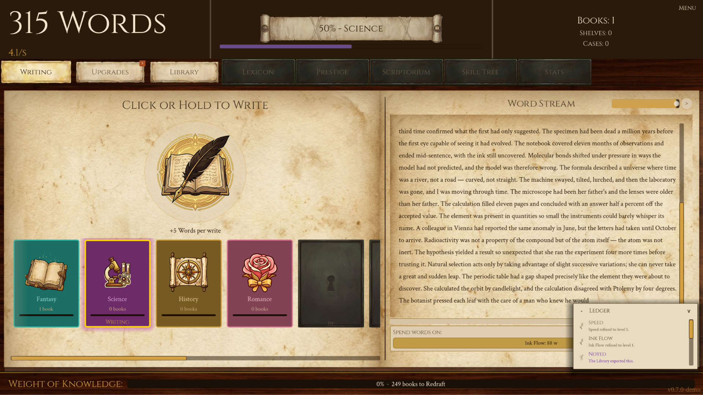
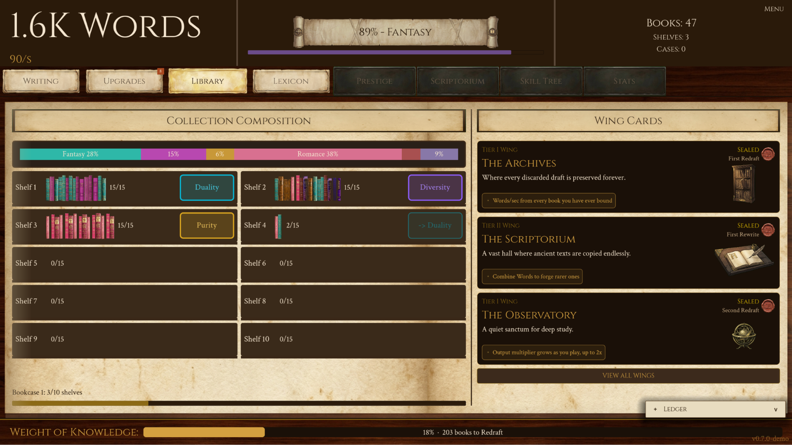
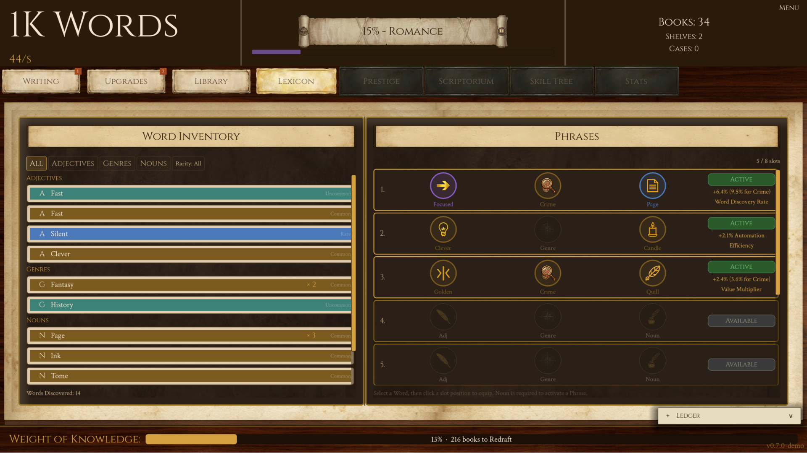
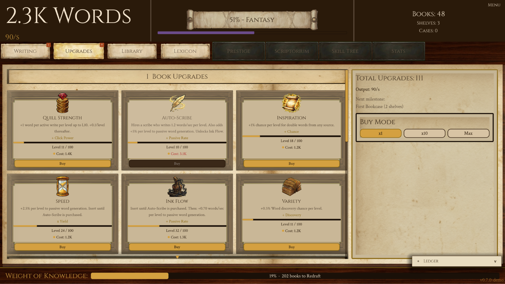
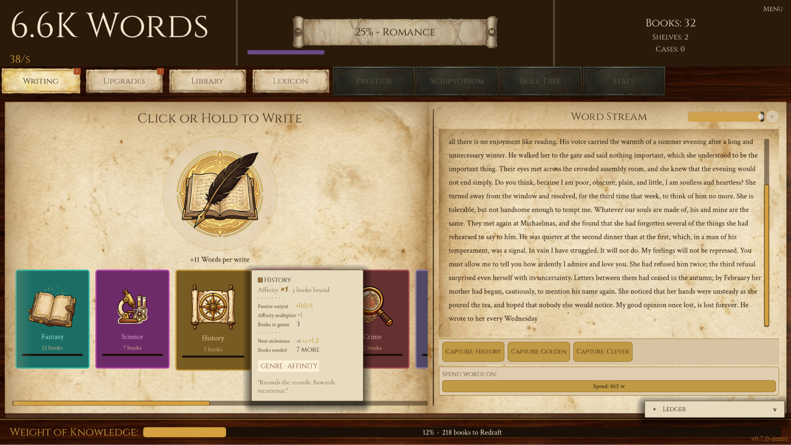
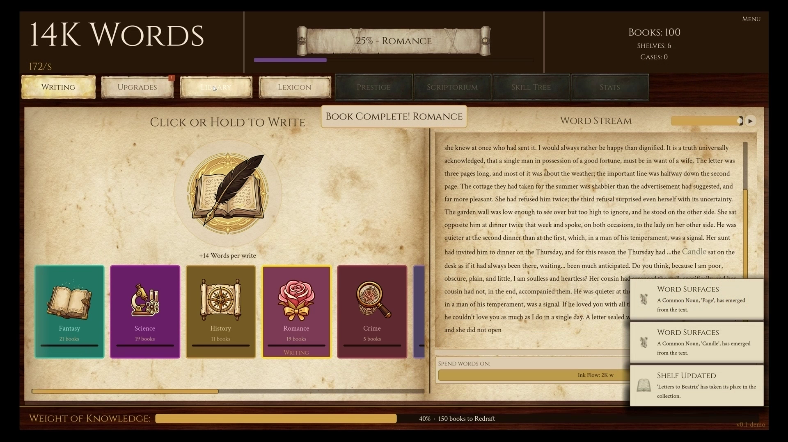
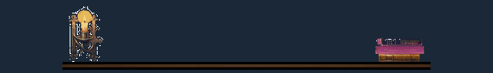

The pitch
Build a library one word at a time. Words become pages, pages become books; every book needs a genre, and each genre changes how your library grows. Fill enough shelves and reality folds. Everything resets. Almost. You rebuild faster, stranger, deeper. And the Library starts to notice you've been here before.
There are no cutscenes. The story lives in the interface itself: tooltips change between runs, labels rename themselves, log entries reference books you haven't written yet. Prestige isn't just the mechanic; it's the plot.
Features
- 12 genres, your strategy. Horror builds a Dread meter toward devastating bursts; Poetry grants timed global buffs; Romance generates paired words. Genre balance shapes your path to the ending.
- 80+ secret Word combinations. Rare Words surface as you write; Phrase effects are deliberately undocumented and community-discovered.
- Five prestige tiers. Each reset reaches further and cracks the fourth wall wider.
- The interface is the narrator. The UI corrupts, remembers, and speaks as the Library wakes.
- Designed to end. 30–50 hours, three endings, optional postgame. No ads, no microtransactions.
Demo reception
97%of players complete their first book 6+ hrslongest recorded demo session 1,700+browser plays in first weeks on itch.ioThe browser demo launched on itch.io in May 2026 and was tuned through three iterations from live telemetry and community feedback on r/incremental_games.
Trailers
Main trailer, 54s. download MP4
Gameplay-first cut, 38s. download MP4 · also available: 30s / 15s social cut
Screenshots
Click for full 1920×1080. More formats available on request.
{kind=link}

{kind=link}

{kind=link}

{kind=link}

{kind=link}

{kind=link}

Key art & logo
{kind=link}
{kind=link}
{kind=link}
Animated assets
Looping GIFs sized for embeds and articles.

About Endpaper
Endpaper is a solo studio in Somerset, UK. The Infinite Library is its first title, and an attempt to answer a simple question: what if the prestige loop, the most mechanical convention in incremental games, was the story? Built in Godot 4.6 and tuned in public through a browser demo and the r/incremental_games community since May 2026.